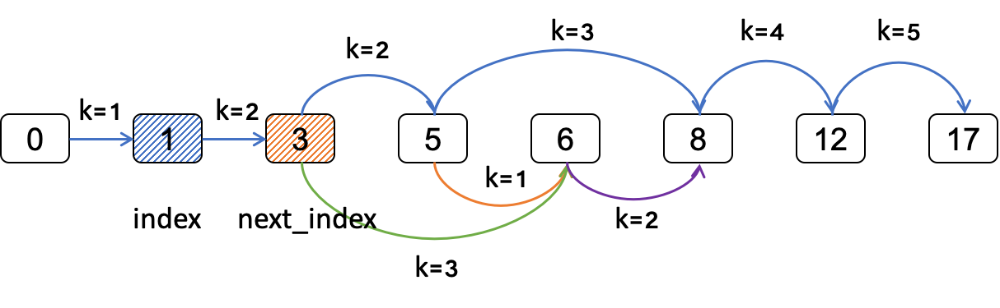

一、递归
递归通常用在可以把一个问题分解成子问题求解，最终由子问题的解可以合成问题的解。
举个例子来理解递归，假如问题的解是[a0, a1, a2, ..., an]，那么用递归求解就是：
- 求解[a0]和[a1, a2, ..., an]；
- 求解[a1]和[a2, a3, ..., an];
- ...
- 直到求解出[an]，最后由[a0], [a1], ..., [an]得到最终解。
递归方法优缺点明显。
优点：
- 逻辑清晰，代码简洁。
缺点：
- 递归层次较深时，函数调用多，性能较差。
- 递归过程中会重复求解相同的子问题，性能较差。
- 递归实质上是利用了系统栈的空间，如果层次较深，容易产生栈溢出。
当然，对于重复子问题，可以通过申请一定的空间保存已经计算出来的子问题，从而提高性能。
二、递归应用
递归在线性数据结构、树、图都有应用，涵盖较广。
递归应用中通常伴随回溯，当然有时候是不需要回溯的。
递归思想上可以用三板斧来思考：
- 递归结束的条件。
- 子问题求解。
- 子问题求解完毕，是否需要回溯。
在实际求解中，可以转换成如下三步：
- 递归结束的条件。
- options，广度上从哪里更进一步？递归函数参数总需要有一个index，来表示走到哪一步？
- 是否需要回溯。
线性数据结构中的递归应用
[leetcode-46] 全排队
给定一个没有重复数字的序列，返回其所有可能的全排列。
输入: [1,2,3]
输出: [[1,2,3], [1,3,2], [2,1,3], [2,3,1], [3,1,2], [3,2,1]]
首先分析题目，全排列数组，就是每次确定一个数，直到最后一个。
如上图所示，第一个数可以选择1/2/3中的一个，第二个可以选择剩下的两个中的一个，最后就是剩下的那一个。
按上述递归/回溯的思路：
- 递归结束的条件：最后一个数找到
- options，确定这个数有哪些选择？那就是剩下的数里面选一个，然后继续下一个数的选择
- 回溯，把上次选的数放回去，重新来选
void permute(int *nums, int nums_size, int index, int **return_array, int *return_size)
{
int i = 0;
/* index indicates which step we arrived, ended position: final element */
if (index == nums_size) {
return_array[*return_size] = calloc(1, sizeof(int) * nums_size);
memcpy(return_array[*return_size], nums, sizeof(int) * nums_size);
*return_size = *return_size + 1;
return;
}
/* options: in permutations, what options does current "index" can be ? */
for (i = index; i < nums_size; i++) {
/* current "index" number set to be i-th number */
swap(nums, index, i);
permute(nums, nums_size, index + 1, return_array, return_size);
/* backtrace */
swap(nums, index, i);
}
return;
}
线性数据结构中使用递归/回溯，如[剑指offer-38]字符串的排列，即输入一个字符串，
输出字符串的所有排列。只是将上述题目中的数字换成字符。
还有的题目需要增加每一步是否合法的判断，如[leetcode-47]
数字全排列，需要考虑重复排列，这个就可以对数组先排序，如果current "index"跟上一个"index"的值一样，
那么意味着重复，需要排除，即在递归前多一个判断这一步是否要走。
[leetcode-22]括号生成，
也是需要增加合法性的判断，即对左括号和右括号个数的判断。
树中的递归应用
树型结构是递归天然的战场。对于树型结构的问题，通常都转化为求解其子树的问题。
树型结构里最经典的就是二叉树，下面我们就以二叉树为例子说明递归/回溯在树型结构中的应用。
树型结构递归/回溯常见思路：
- 递归结束条件：到达叶子节点
- options: 左子树和右子树，对于二叉树就这两种选择
- 回溯，是否需要回溯到父节点
[二叉树的前序/中序/后序遍历]
前序遍历
void preorder(struct tree_node *root)
{
if (!root) {
return;
}
visit(root->data);
preorder(root->left);
preorder(root->right);
}
中序遍历
void inorder(struct tree_node *root)
{
if (!root) {
return;
}
inorder(root->left);
visit(root->data);
inorder(root->right);
}
后序遍历
void postorder(struct tree_node *root)
{
if (!root) {
return;
}
postorder(root->left);
postorder(root->right);
visit(root->data);
}
几乎所有的二叉树的题目都是遍历树，那么就是前序/中序/后序遍历的变形。
图中的递归应用
在图的题目中，最常用的搜索方法就是深度优先搜索(DFS)和广度优先搜索(BFS)。其中， DFS使用递归/回溯方法实现，使得逻辑清晰，代码简洁。
[leetcode-79] 单词搜索
给定一个二维网格和一个单词，找出该单词是否存在于网格中。方向可以上下左右搜素， 网格字符不能重复
仍然是按照前面的三步走：
- 结束条件：搜索的单词完成了。
- options：判断当前字符满足条件，往上下左右走一步。
- 回溯：上下左右均没有满足，该字符放弃。
int compare_word(char **board, int row, int col, int x, int y,
char *word, int index, int **visited)
{
/* ended position: index is last one */
if (index == (strlen(word))) {
return 1;
}
/* options */
if ((x >= 0) && (x < row) && (y >= 0) && (y < col)
&& (!visited[x][y]) && (word[index] == board[x][y])) {
visited[x][y] = 1;
if (compare_word(board, row, col, x + 1, y, word, index + 1, visited)
|| compare_word(board, row, col, x, y + 1, word, index + 1, visited)
|| compare_word(board, row, col, x - 1, y, word, index + 1, visited)
|| compare_word(board, row, col, x, y - 1, word, index + 1, visited)) {
return 1;
}
/* backtrace */
visited[x][y] = 0;
}
return 0;
}
三、总结
解题三步走：
- 结束条件
- options：往哪个方向走？
- 是否需要回溯？
子问题优化：
- 空间换时间，额外空间缓存已经求解的子问题
最后以优化的递归来结束递归/回溯章节
[leetcode-403] 青蛙过河
一只青蛙想要过河。 假定河流被等分为 x 个单元格，并且在每一个单元格内都有可能放有一石子（也有可能没有）。 青蛙可以跳上石头，但是不可以跳入水中。给定石子的位置列表（用单元格序号升序表示）， 请判定青蛙能否成功过河（即能否在最后一步跳至最后一个石子上）。 开始时， 青蛙默认已站在第一个石子上，并可以假定它第一步只能跳跃一个单位（即只能从单元格1跳至单元格2）。如果青蛙上一步跳跃了 k 个单位，那么它接下来的跳跃距离只能选择为 k - 1、k 或 k + 1个单位。
输入：[0,1,3,5,6,8,12,17]
输出：true
解释：
总共有8个石子。
第一个石子处于序号为0的单元格的位置, 第二个石子处于序号为1的单元格的位置,
第三个石子在序号为3的单元格的位置， 以此定义整个数组...
最后一个石子处于序号为17的单元格的位置。
青蛙可以成功过河：
跳1个单位到第2块石子, 然后跳2个单位到第3块石子, 接着
跳2个单位到第4块石子, 然后跳3个单位到第6块石子,
跳4个单位到第7块石子, 最后，跳5个单位到第8个石子（即最后一块石子）。
按前面叙述的几个步骤：
- 结束条件：跳到了最后一个石子
- options：跳 k - 1, k, k + 1 三种可能性
- 不需要回溯，找到就说明存在，没找到就是不存在
- 优化

如图所示，假设青蛙从index跳k步到next_index，那么只要判断从next_index开始，经过k - 1, k, k + 1步能否到达终点。如果青蛙从index跳k步到达不了next_index，那么到达不了。
重复子问题的优化，只需要用一个二维数组，保存从index跳k步能否到达终点。如果从index跳k步的子问题已经求解过了，则直接返回。否则需要递归求解，求解的结果保存在数组中。
/* cross(stones, stonesSize, 0, 1, cross_hist) */
int cross(int *stones, int stones_size, int index, int step, int **cross_hist)
{
int stone = stones[index] + step;
int next_index = 0;
/* ended position: step to last one */
if (stone == stones[stones_size - 1]) {
return CROSS_YES;
}
/* optimize: had been solved */
if (cross_hist[index][step] > CROSS_NONE) {
return cross_hist[index][step];
}
/* next stone's position, -1 means cannot cross */
next_index = next(stones, stones_size, stone, index);
if (next_index < 0) {
return CROSS_NO;
}
/* options: from next_index, jump k + 1, k, k - 1 steps */
if ((cross(stones, stones_size, next_index, step + 1, cross_hist) == CROSS_YES)
|| (cross(stones, stones_size, next_index, step, cross_hist) == CROSS_YES)
|| (cross(stones, stones_size, next_index, step - 1, cross_hist) == CROSS_YES)) {
cross_hist[index][step] = CROSS_YES;
return CROSS_YES;
}
cross_hist[index][step] = CROSS_NO;
return CROSS_NO;
}